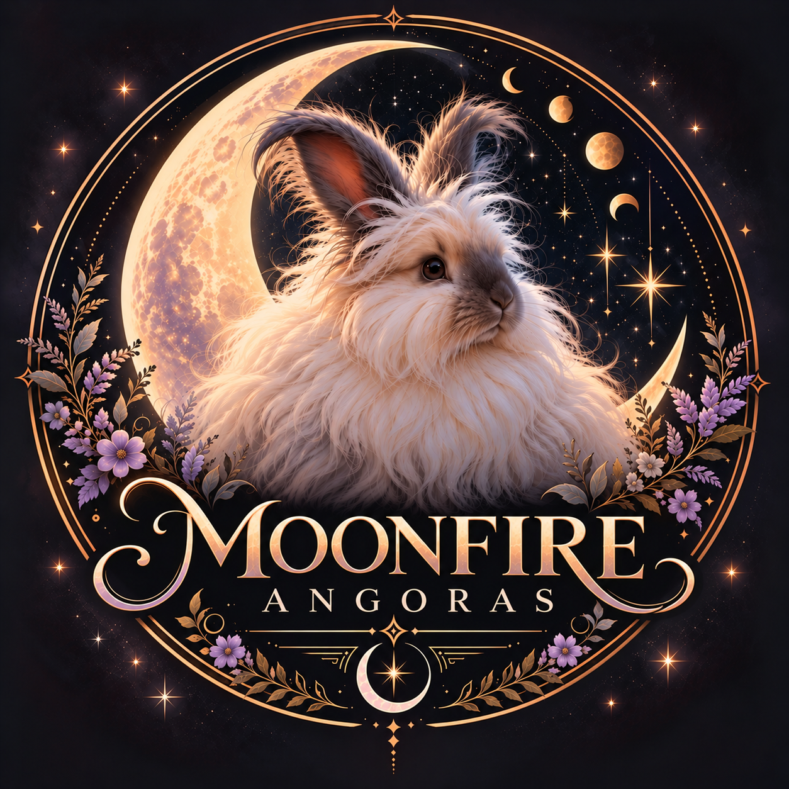

Thoughtfully raised.
Naturally magical.
A family-raised English Angora rabbitry where health and wellbeing come first, with an emphasis on sound temperament and preserving the beautiful qualities of the breed standard.
About Moonfire
Learn about our philosophy and the values behind Moonfire Angoras.
Our Angoras
Meet the English Angoras who make Moonfire special.
Available Rabbits
See current and future availability from Moonfire Angoras.
Litters
Follow planned pairings, upcoming litters and Moonfire babies.
Angora Care
Learn more about caring for the extraordinary English Angora.
Policies
Information for families interested in welcoming a Moonfire Angora.